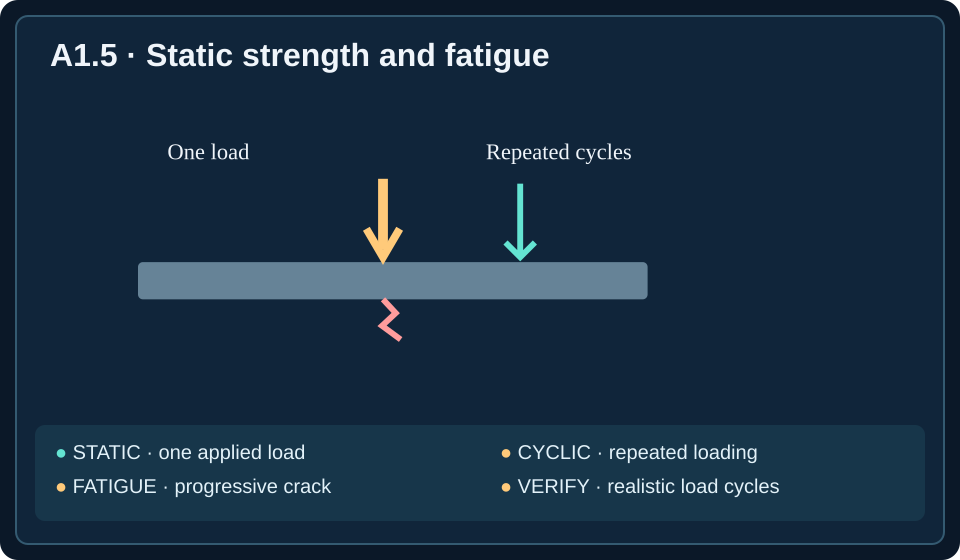

Semester objective A-O1: Explain mechanical engineering roles, ethical obligations, and design considerations.
Unit essential question: How do mechanical engineers use scientific knowledge to develop useful, safe, and reliable technology?
Learning target: Evaluate decisions involving professional responsibility and risk.
Lesson objectives: Prioritize public safety; report complete and accurate test evidence; recognize and disclose conflicts of interest; select hazard controls that reduce exposure; and evaluate uncertainty and incomplete verification.
Engineering Decisions Affect People
Imagine a lifting device designed to raise heavy equipment in a repair shop. The machine works during ordinary use, but it fails a required overload test the day before delivery. The project manager wants to ship it anyway because the customer is waiting. The engineer faces a choice that is not just technical: what should happen when the evidence shows that a machine may be unsafe?
Engineering ethics concerns the responsibilities engineers have when their work affects other people. Mechanical systems can injure operators, maintenance workers, customers, and bystanders if they fail. Engineers therefore have a professional duty to protect public safety and to report evidence truthfully, even when doing so creates delays or costs.
A product that performs its intended task is not necessarily acceptable. Engineers must also consider foreseeable misuse, maintenance, environmental conditions, uncertainty, and the consequences of failure. A responsible decision starts by asking who could be harmed, how serious the harm might be, and what evidence is needed before use can be considered safe.
Public Safety Comes Before Schedule Pressure
Engineers work under deadlines, budgets, and expectations. Those pressures are real, but they do not erase a known safety concern. Suppose a prototype hoist fails a required overload test. The failure is evidence that the device has not demonstrated compliance with an important requirement. Shipping it while hiding the result would expose users to an unresolved hazard.
The responsible response is to document the result, communicate the concern, investigate why the test failed, correct the problem, and repeat appropriate verification before the equipment is released. An engineer should not quietly remove the requirement or replace a failed measurement with a target value. A verification test is intended to determine whether the product meets a requirement, not to make the product look successful.
The same reasoning applies when a bridge support develops an unexplained crack or a machine guard fails a test. The immediate response should protect people while qualified personnel assess the hazard. Depending on the situation, that may mean restricting use, stopping operation, or initiating an inspection. Engineers should not assume that a warning or a promise to be careful makes a known physical danger acceptable.

Honest Reporting and Complete Test Records
A test record is a documented account of what was tested, how it was tested, and what was observed. It should include results that do not meet expectations. Imagine a prototype that passes four trials but fails the fifth under the specified load. Reporting only the successful trials creates a misleading picture of performance.
A failure does not automatically mean that every part of the design is defective. It does mean that the engineer must investigate the failed condition. The fifth trial may reveal a weakness, an unusual environmental condition, an instrument problem, or a mistake in the test procedure. The proper approach is to preserve the data, investigate the discrepancy, and explain what is known and unknown.
Data integrity means maintaining accurate, complete, and traceable information. Engineers should not delete unfavorable results, change measured values to match design targets, or present an unsupported claim of perfect performance. A useful report distinguishes measured observations, calculations, assumptions, and conclusions. That distinction allows others to review the evidence and make informed decisions.
Conflicts of Interest and Independent Judgment
Suppose an engineer must choose a bearing supplier and owns shares in one of the companies being considered. Even if that supplier makes an excellent product, the engineer has a conflict of interest: a personal financial interest could influence, or appear to influence, the professional decision.
Other examples include evaluating a product made by a relative's company or accepting an expensive gift from a manufacturer whose equipment is being tested. A conflict does not always prove that a decision is biased, but concealing it undermines confidence in the evaluation.
The responsible response is disclosure: make the relevant relationship or benefit known and follow the organization's procedures. Depending on the situation, the engineer may need an independent reviewer or to step aside from the selection. Technical criteria and documented test results should determine whether a supplier or product is suitable, not personal relationships or gifts.
Recognizing Hazards and Assessing Risk
A hazard is a condition or source with the potential to cause harm. A rotating shaft that an operator can touch creates an entanglement hazard. An elevated platform with an exposed edge creates a fall hazard. A mechanical press that can close while a hand is in its working area creates a crushing hazard.
Risk concerns both the likelihood that harm could occur and the severity of the consequences. Engineers evaluate risk by considering who may be exposed, how often exposure occurs, how severe an injury could be, and whether safeguards can fail. Risk cannot always be reduced to a single precise number, but structured analysis makes decisions more defensible.
A safety assessment should consider normal operation, maintenance, cleaning, foreseeable mistakes, and equipment failures. A machine that is safe only when every user behaves perfectly is not necessarily well designed. Effective safety engineering seeks to prevent dangerous contact or operation rather than depending entirely on people remembering instructions.
Choose Controls That Directly Reduce the Hazard
Engineers can reduce hazards in several ways. The strongest approach is often to eliminate a dangerous condition or redesign the machine so people cannot be exposed to it. When elimination is not practical, a physical guard can prevent access to moving parts. An interlock can prevent a machine from operating while a protective door is open.
Consider a rotating shaft next to an operator's workstation. A warning label may remind people to stay away, but it does not prevent accidental contact. A correctly designed fixed guard directly blocks access. Similarly, a guardrail along an elevated maintenance platform directly reduces fall exposure, while a poster merely asks workers to be cautious.
For a mechanical press, an interlocked guard can prevent the press from closing when the working zone is accessible. Engineers must verify that the protective device actually works under expected conditions. Labels, training, and procedures remain useful, but they should not substitute for a practical physical safeguard when one is needed.
Uncertainty: What the Evidence Does and Does Not Prove
All measurements have limits. Measurement uncertainty expresses the range of values that may reasonably be consistent with a reported measurement. Suppose a component must withstand at least 500 newtons of force, and a test reports 505 newtons with an uncertainty of plus or minus 15 newtons. The plausible range includes values below the requirement. The result does not establish that the component meets the 500-newton minimum.
This does not prove that the component is defective. It means the available evidence is insufficient to establish compliance. Engineers may need more accurate measurements, additional testing, or a design with a larger safety margin. They should report the uncertainty instead of rounding the result upward or ignoring it.
Calibration is the process of checking an instrument's readings against a suitable reference and adjusting or accounting for errors as appropriate. If a temperature sensor controlling an emergency shutdown reads inconsistently near its trip point, the team should investigate and calibrate or replace it before relying on that safety function. A sensor display that lights up is not evidence that its measurements are dependable.
Testing Must Match Real Operating Conditions
A successful test is meaningful only for the conditions it actually represents. A device tested at room temperature has not automatically been shown to work outdoors during freezing weather. Temperature can change material behavior, lubrication, battery performance, and dimensions. A product that performs well with a light load has not necessarily been verified at its maximum specified load.
Engineers define an operating envelope, the range of conditions in which equipment is expected to function. This may include temperature, load, speed, humidity, vibration, and duty cycle. Verification should cover the relevant requirements and the conditions that could make failure more likely.
When test coverage is incomplete, engineers must state that limitation. They should not claim full compliance on the basis of a narrow set of favorable results. Responsible reporting may call for additional tests, a restricted operating range, or design revisions before release.
Repeated Loading, Fatigue, and Safety Claims
A component can survive a single heavy load and still fail after many smaller loads. Static loading describes a load applied without repeated cycling during the test. Cyclic loading repeatedly increases, decreases, or reverses stress in a component. Over many cycles, small cracks can begin and grow; this process is called fatigue. A crack may remain difficult to notice until the remaining material can no longer carry the load.
Think about a metal support on a lift that raises and lowers equipment every day. A one-time test at the rated load may show that the support does not bend or break immediately. That test provides useful evidence about one loading condition, but it does not demonstrate that the support will survive thousands of operating cycles. Engineers must evaluate the actual duty cycle, stress concentrations, material behavior, and appropriate repeated-load testing or analysis.
Suppose cracks appear in a bracket after 8,000 cycles. A manager suggests reducing the maximum rated load and continuing to use the machine. A lower load may reduce stress, but it does not automatically prove that the cracked design is safe. Engineers need to investigate the crack's cause, inspect affected equipment, assess the risk, and verify that a proposed redesign or operating limit adequately addresses repeated loading before claiming safe operation. Depending on the danger, operation may need to stop during the investigation.
Worked decision: A bicycle pedal arm holds a rider's weight in a single test, but inspection reveals a growing crack after repeated pedaling. The ethical response is not to assume that a lighter rider makes the arm safe. The engineer should report the finding, assess whether the arm should be taken out of service, investigate the cause, and verify any corrective action using evidence relevant to repeated loading.
Worked Example: A Safety-Critical Lifting Device
A company develops a small electric lift for moving heavy containers. The stated requirement is to raise a 200-kilogram load under specified operating conditions. During final testing, the lift moves the normal load successfully, but a required overload test reveals that a bracket begins to deform. The delivery deadline is the next morning.
The engineer first records the test conditions, measured load, and visible deformation. The bracket's behavior is a safety concern because it may indicate that the lift lacks adequate strength under a condition the product was required to withstand. The engineer should communicate the failure, prevent premature release, and initiate an investigation rather than changing the report or assuming operators will never overload the machine.
The team might inspect the bracket material, dimensions, mounting method, and actual load path. They could redesign the bracket, choose a suitable material, or revise the arrangement to reduce stress. Any change must be evaluated against the original requirements, and the lift must pass appropriate verification before being declared ready.
Now suppose the redesign passes a test at 20°C, but the lift will also operate outdoors at −10°C. The successful warm-weather test does not establish performance in the cold. The team must evaluate whether the environmental requirement is satisfied and collect additional evidence if necessary. This example combines ethics, honest reporting, risk control, and uncertainty in one decision.
A Practical Framework for Ethical Decisions
When an engineering decision involves safety or professional responsibility, start with the facts. Identify the intended function, applicable requirements, test results, and any limitations of the evidence. Separate what has been observed from what is merely suspected. Then identify the people who could be affected and the hazards they may face.
Next, compare possible actions. Does the action directly reduce the hazard? Does it preserve accurate information? Does it respect conflicts-of-interest procedures? Does it require additional verification? An option that is convenient for a deadline but leaves a known danger unresolved is not equivalent to one that protects users.
Finally, document the decision and its reasoning. Engineers often work in teams, so clear records help others understand the evidence, unresolved questions, corrective actions, and conditions for approval. The goal is not to eliminate all uncertainty from the world. It is to make responsible decisions that are proportionate to the risks and supported by the evidence available.
Lesson glossary
Select a term to reveal its definition.
Fatigue
Progressive damage from repeated stress cycles that can produce cracks and eventual failure.
Static loading
Load applied without repeated cycling during the test.
Cyclic loading
Loading that repeatedly increases, decreases, or reverses stress.
Engineering ethics
Professional principles guiding engineers' decisions and responsibilities.
Public safety
Protection of people from unacceptable harm associated with engineering work.
Verification test
Test used to determine whether a design meets a specified requirement.
Test record
Documentation of procedures, conditions, and observed results.
Data integrity
Accuracy, completeness, and traceability of recorded information.
Conflict of interest
Personal interest that may compromise, or appear to compromise, professional judgment.
Disclosure
Making relevant relationships or interests known to the appropriate people.
Hazard
Condition or source with the potential to cause harm.
Risk
Combination of the likelihood and potential severity of harm.
Guard
Physical barrier designed to prevent access to a hazard.
Interlock
Device or control that prevents unsafe operation when a protective condition is not met.
Measurement uncertainty
Range describing limitations in the precision of a measured value.
Calibration
Checking instrument readings against a reference and addressing measurement error.
Operating envelope
Specified range of conditions in which a device is intended to work.
Safety margin
Additional capacity or separation beyond the minimum expected operating demand.
Corrective action
Change made to address an identified problem or its cause.
Professional judgment
Reasoned technical decision-making informed by evidence and responsibilities.
Test coverage
Extent to which testing represents required conditions and uses.
Engineering Ethics & Safety Decision Lab
Apply the lesson to realistic safety, evidence, conflicts-of-interest, hazard-control, and uncertainty decisions. Receive feedback on each scenario.